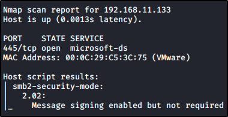

Discovering Hosts with SMB Signing Disabled
To know if an host has SMB Signing Disabled,
You can run nmpa (with the appriopriate script) or Nessus:
Domain Controller, THEPUNISHER and SPIDERMAN (132,133,134 IP)
have all "SMB Enabled but no required", except the server with "SMB Enabled AND required"



We can still attack the targets with "SMB Enabled but no required"
take the IP Addresses and write into a file (E.G. target.txt)